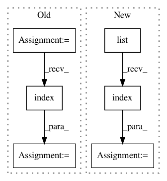

3e12d49324793d4798ee10bb6ef6a1c1b7633baf,python/caffe/pycaffe.py,,_Net_forward,#Any#Any#Any#Any#,37
Before Change
blobs = []
if start is not None:
start_ind = [lr.name for lr in self.layers].index(start)
else:
start_ind = 0
if end is not None:
After Change
start_ind = 0
if end is not None:
end_ind = list(self._layer_names).index(end)
outputs = set([end] + blobs)
else:
end_ind = len(self.layers) - 1
outputs = set(self.outputs + blobs)
In pattern: SUPERPATTERN
Frequency: 3
Non-data size: 6
Instances
Project Name: BVLC/caffe
Commit Name: 3e12d49324793d4798ee10bb6ef6a1c1b7633baf
Time: 2014-09-01
Author: jonlong@cs.berkeley.edu
File Name: python/caffe/pycaffe.py
Class Name:
Method Name: _Net_forward
Project Name: BVLC/caffe
Commit Name: 3e12d49324793d4798ee10bb6ef6a1c1b7633baf
Time: 2014-09-01
Author: jonlong@cs.berkeley.edu
File Name: python/caffe/pycaffe.py
Class Name:
Method Name: _Net_backward
Project Name: deeptools/HiCExplorer
Commit Name: 09a7f7a4deb2d05942e3ce122ddbe84205d984d6
Time: 2018-06-18
Author: wolffj@informatik.uni-freiburg.de
File Name: hicexplorer/chicPlotViewpoint.py
Class Name:
Method Name: main